When you complete this learning material, you will be able to:
Explain the construction and operating principles of DC generators and motors.
You will specifically be able to complete the following tasks:
Describe the construction and operating principles of a DC generator.
The magnetic/induction principles behind the operation of an AC generator are essentially the same as the principles associated with the operation of a DC generator. The fundamental difference between an AC generator and a DC generator lies in the design of the slip rings. In a DC generator, the slip rings are replaced by a device called a commutator (a commutator is sometimes called a split-ring commutator).
Fig. 1(a) shows the slip rings of an AC generator delivering alternating current power to a load. Fig. 1(b) shows the commutator of a DC generator delivering direct current power to a load.
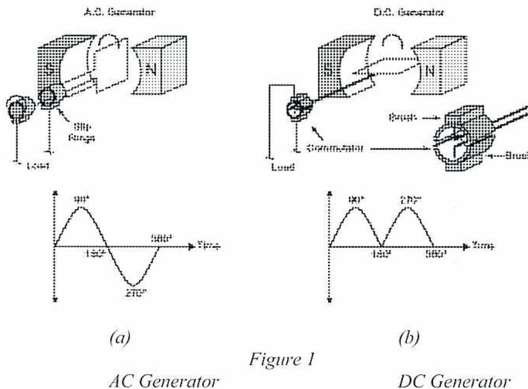
Figure 1 consists of two parts, (a) and (b), illustrating the construction and output of AC and DC generators.
(a) AC Generator: The top diagram shows a rotor with a single coil rotating between a North (N) and South (S) magnetic pole. The ends of the coil are connected to two continuous slip rings. Brushes make contact with these slip rings, which are then connected to a load. The bottom graph shows the output voltage waveform over one full cycle (0° to 360°). The voltage starts at 0V at 0°, rises to a peak of +10V at 90°, crosses zero at 180°, reaches a minimum of -10V at 270°, and returns to 0V at 360°.
(b) DC Generator: The top diagram shows a similar rotor and magnetic pole setup, but the ends of the coil are connected to a split-ring commutator. Two brushes are in contact with the commutator segments, which are connected to a load. The bottom graph shows the output voltage waveform over one full cycle (0° to 360°). Due to the commutator, the output is a pulsating direct current, with two positive pulses: one from 0° to 180° (peaking at +10V at 90°) and another from 180° to 360° (peaking at +10V at 270°), with zero voltage at 0°, 180°, and 360°.
Figure 1
AC Generator
DC Generator
An AC generator is called an alternator, and a DC generator is called a dynamo. The rotating coil of a generator is called the rotor or armature.
The commutator, shown in Fig. 1, is a mechanical rectifier that converts AC power into DC power. The commutator is a single slip ring that is split in half. Each half is insulated and connected to opposite ends of the rotating coil. Brushes allow current to flow to the connected load.
The right-hand rule for generators is used to determine the current flow through the segments of the coil (see Fig. 2).
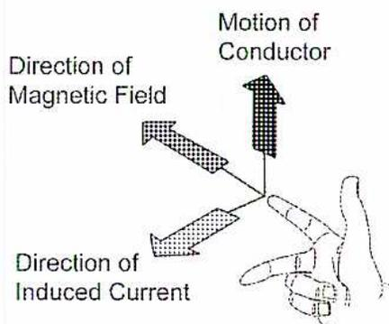
The diagram shows a right hand in a generator configuration. The thumb is extended vertically upwards, representing the direction of motion of the conductor. The index finger is extended horizontally to the left, representing the direction of the magnetic field. The middle finger is extended vertically downwards and slightly to the left, representing the direction of the induced current. Arrows point from the text labels to the corresponding fingers.
Figure 2
Right-hand Rule
As the coil rotates, it allows current to leave in only one direction. Or, stated differently, the current has the same polarity as the coil is rotated through \( 360^\circ \) .
The operation of the commutator can be seen by following the coil as it rotates through \( 360^\circ \) . The coil segments are labelled A and B, as shown in Fig. 3.
![Figure 3: Coil Rotation. A series of five diagrams showing a rectangular coil (with segments A and B) rotating clockwise in a uniform magnetic field (indicated by an arrow pointing left). Each diagram shows the coil at a specific angle: 0°, 90°, 180°, 270°, and 360°. To the right of each coil position is a corresponding graph of induced EMF versus Time. The graphs show a rectified sine wave (all positive half-cycles) due to the commutator. The x-axis is labeled 'Time' with markers at 90°, 180°, 270°, and 360°. The y-axis has '+' and '-' indicators. The final graph at 360° includes a dashed horizontal line labeled 'RMS (Effective)'.](de6e8b740c69dac308cce9edfec3eff4_img.jpg)
Figure 3
Coil Rotation
commutator is at \( 0^\circ \) and at \( 360^\circ \) . The point where no emf is induced in the rotating coil is called the neutral plain.
At \( 270^\circ \) : Maximum emf is induced in the coil because segments A and B are moving at right angles to the magnetic field. Note that the direction of current through the coil is the same as it was at \( 90^\circ \) .
At \( 360^\circ \) : Zero emf is again induced because segments A and B are moving parallel to the magnetic field.
As the armature continues to rotate, pulsating DC voltage and current are produced as shown. The voltage waveform shown in Fig. 3 has a significant ripple. This is the distance (or voltage) measured between the peaks and valleys of the waveform.
The pulsating effect, or ripple effect, of the DC current shown in Fig. 3 is not desirable for most DC loads. In practical DC generators, more poles, armature coils, and commutator segments are added to reduce the pulsating effect of the induced DC voltage.
Fig. 4 shows a more practical DC generator with 2 coils and 4 commutator segments.
![Diagram of a DC generator with 2 coils and 4 commutator segments. The left side shows a 3D perspective of the armature with two coils (A and B) and a 4-segment commutator. A brush is shown in contact with one segment. The right side shows a graph of Voltage A and Voltage B over time (0 to 360 degrees). Voltage A starts at a peak at 0 degrees and decreases, while Voltage B starts at zero and increases. They cross at 45 degrees, labeled 'Switching Point Voltages are Equal'. The graph shows a pulsating DC output with a ripple.](e1dda754c2c88a8ad0b968aea4fc0786_img.jpg)
The figure illustrates a DC generator with a 2-coil armature and a 4-segment commutator. On the left, a 3D diagram shows the armature with two coils, A and B, connected to a 4-segment commutator. A brush is in contact with one segment. The right side is a graph of Voltage A and Voltage B over a 360-degree rotation. Voltage A starts at a maximum at \( 0^\circ \) and decreases, while Voltage B starts at zero and increases. They intersect at \( 45^\circ \) , labeled as the 'Switching Point Voltages are Equal'. The resulting output is a pulsating DC voltage with a significant ripple.
Figure 4
DC Generator with 2 Coils and 4 Commutator Segments
The commutator is divided into 4 segments because there are 4 ends to the 2 coils of the armature. A segment of the commutator passes under a brush every \( 90^\circ \) as the armature rotates.
At \( 0^\circ \) : Coil A is generating maximum voltage and starting to decrease. Coil B is generating zero volts and starting to increase.
At \( 45^\circ \) : Coil A and Coil B are generating equal voltage. This means there is no potential difference between the voltages generated in each coil. This is the point where the coils are shorted by the brushes, but since there is voltage difference, the coil segments pass under the brushes without sparking.
As the coils rotate through \( 360^\circ \) , a net DC voltage is produced as shown in Fig. 4. Notice that the ripple has been significantly reduced. The effective, or RMS, value of the voltage is higher when more coils are added to the armature. See Fig. 5.
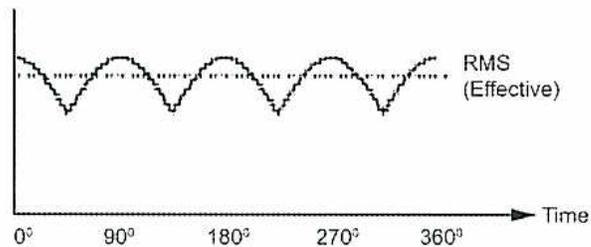
The graph shows a DC waveform with a periodic ripple. The x-axis is labeled 'Time' and has markings for \( 0^\circ \) , \( 90^\circ \) , \( 180^\circ \) , \( 270^\circ \) , and \( 360^\circ \) . The y-axis represents voltage. A dashed horizontal line is labeled 'RMS (Effective)'.
Figure 5
DC Waveform
The ripple in the DC waveform shown in Fig. 5 can be improved by adding more armature coils and commutator segments. It can also be improved by adding more poles, as shown in Fig. 6. More poles also provide a stronger field, and therefore a higher induced voltage.
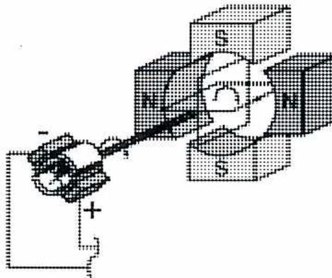
The diagram illustrates a DC generator with four poles. The stator consists of four magnetic poles, two labeled 'N' (North) and two labeled 'S' (South), arranged in an alternating fashion. In the center is the armature, which is connected to a commutator. Brushes are shown in contact with the commutator, and the output is connected to terminals marked with '+' and '-' signs.
Figure 6
DC Generator with 4 Poles
Fig. 7 shows the stator frame of a DC generator. The three pole pairs (i.e. six poles) are visible in the photograph. The photograph also shows interpoles located between the pole pairs (Interpoles are discussed later in this module).
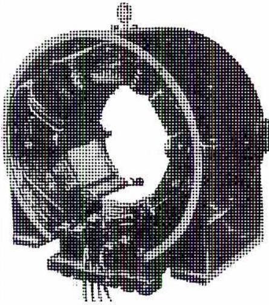
A detailed black and white illustration of a stator frame, showing its outer casing and internal structure with radial and tangential ribs.
Figure 7
Stator Frame
Fig. 8 shows the armature. Visible from left to right are the commutator segments and coils. Next to the coils, a cooling fan is attached on the shaft of the armature.
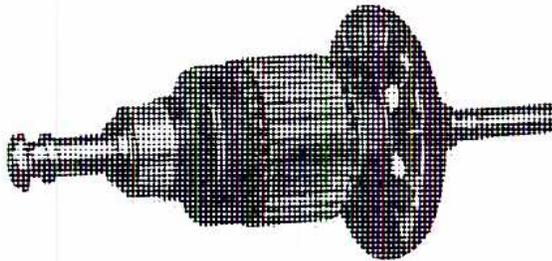
A black and white illustration of an armature assembly, showing the commutator segments, armature coils, and a cooling fan mounted on the shaft.
Figure 8
Armature
The magnetic field produced by the current that flows in the armature coils of a DC generator affects the magnetic field of the poles mounted on the stator.
Fig. 9(a) shows the magnetic lines of force (flux) between the north and south poles of a 2-pole generator.
Fig. 9(b) shows a cross-sectional view of the armature coil. In this position, no emf is generated. Again, this is the neutral plane and the position where the commutator segments transfer from one brush to the other.
Fig. 9(c) shows the armature coil in the position where maximum emf is generated.
Fig. 9(d) shows the current flowing in the armature coil. This current sets up magnetic fields as shown in the illustration. Current in the left coil segment is flowing into the paper which means the magnetic field is in the clockwise direction. Current in the right coil segment is flowing out of the paper which means the magnetic field is in the counter-clockwise direction.
Fig. 9(e) shows the interaction of the stator field and the armature field. This is an oversimplified representation of an actual DC generator, but it illustrates that the stator field is distorted by the armature field. This results in a shift of the neutral plane and presents a problem in commutation.
Commutation takes place at the point where the armature coil is moving parallel to the stator field. Fig. 9(e) demonstrates that if the commutator and brushes remain in the same position as shown in Fig. 9(a), an emf will be generated in the armature coil. This results in sparking when the coil segments transfer from one brush to the other.
To provide good commutation, the brushes of a generator must be adjusted to compensate for the shift in the neutral plane.
As discussed earlier, more coils are added to reduce the ripple in the DC voltage. Fig. 9(f) shows a cross-sectional view of an armature with several coil segments. Each segment sets up magnetic fields that are proportional to the amount of current being supplied to the DC load. Therefore, the amount of distortion of the stator field is proportional to the generator load. This makes it necessary to adjust the position of brushes according to the load in order to have a sparkless commutation.
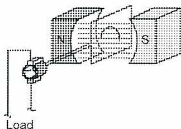
Figure 9(a)
Magnetic Lines of Force (flux)
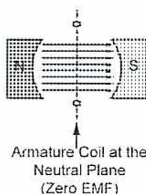
Figure 9(b)
Armature Coil (cross section)
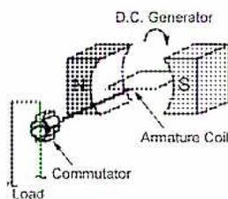
A schematic diagram of a D.C. generator. It features a central armature coil (represented by a rectangle) positioned between two curved magnetic poles, North (N) and South (S). The armature is connected to a commutator, which is in turn connected to an external load. Arrows indicate the clockwise rotation of the armature.
Figure 9(c)
Armature Coil (maximum emf)
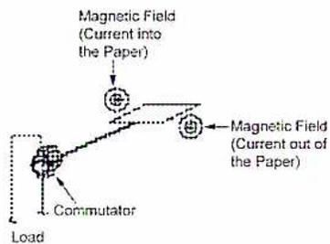
This diagram shows the armature coil in a vertical orientation, perpendicular to the horizontal magnetic field. The coil is connected to a commutator and a load. The magnetic field is indicated by dots and crosses, representing current flowing into and out of the paper, respectively. This position corresponds to the maximum induced electromotive force (emf).
Figure 9(d)
Armature Coil (current flow)
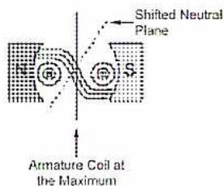
A diagram illustrating the effect of armature reaction. It shows the main magnetic field lines between the North (N) and South (S) poles. The armature coil, located at the bottom, is at the 'Maximum' position. The resulting magnetic field from the armature current distorts the main field, causing the 'Shifted Neutral Plane' to move in the direction of rotation.
Figure 9(e)
Stator Field and Armature Coil
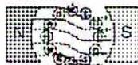
A detailed cross-sectional view of the stator and armature. It shows the stator field windings and the armature coil segments (represented by small circles) arranged around the armature core. The diagram illustrates the interaction between the stator's magnetic field and the armature's current-carrying segments.
Figure 9(f)
Armature with Several Coil Segments
Note: The action of the armature currents in establishing a field that distorts and weakens the stator field is called armature reaction .
Explain the principle and application of compensating windings, interpoles and lap and wave armature windings.
Compensating windings, or pole-face windings, can be used to reduce the effects of armature reaction. This type of winding has conductors embedded in the face of stator poles. The winding is arranged to be parallel to the armature windings. The winding is connected in series with the armature winding so that the full armature current flows through it but in the opposite direction to that of the adjacent armature conductors. The flux produced by the compensating winding neutralizes the flux produced by the armature current. Compensating windings are expensive and ordinarily only used in larger capacity machines.
Fig. 10 shows a diagram of compensating windings. The compensating windings are machined into the face of the stator poles. The armature (rotor) windings are laid in slots as shown in the illustration.
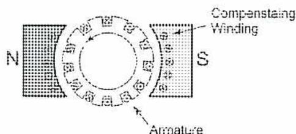
A schematic diagram of a DC machine's stator and rotor. On the left is a North (N) pole, and on the right is a South (S) pole. Between them is a circular rotor labeled 'Armature' with an arrow. The rotor has 12 slots, each containing a conductor. Arrows in the slots indicate the direction of current flow. On the face of the N pole, there is a set of conductors labeled 'Compensating Winding' with an arrow. These conductors are arranged to carry current in the opposite direction to the armature conductors under the pole.
Figure 10
Compensating Windings
Interpoles, also called commutating poles, reduce armature reaction and improve commutation. Fig. 11 shows these poles arranged between the main stator poles. An interpole has the same polarity as the following pole in the direction of rotation. Interpoles are wound in series with the armature so that the amount of field created is proportional to the armature current. Interpoles shift the neutral plane in the opposite direction of armature reaction.
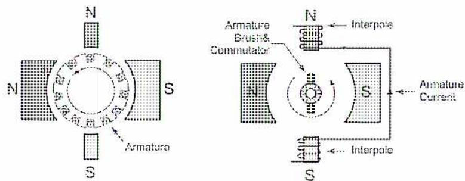
Figure 11
Interpoles
The interpole field must be strong enough to provide the commutating flux and to neutralize the flux that is shifted into the neutral plane by the effect of the armature reaction.
It is not necessary to shift the brushes of a generator equipped with compensating windings or interpoles. Fig. 12 is a photograph of a 4-pole stator with interpoles. The interpoles are the smaller structures located between the larger main poles.
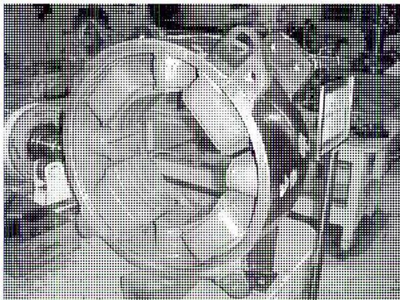
Figure 12
4-pole Stator with Interpoles
Fig. 13 is a photograph of an armature showing the commutator bars and windings embedded in slots. The windings are connected to the commutator bars.
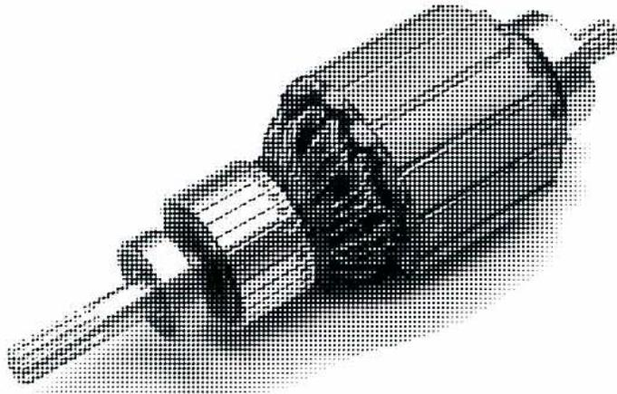
Figure 13
Armature with Commutator Bars and Windings
The armature windings of most DC generators are wound into slots on a drum-type armature. The windings are then connected to the commutator. Armature windings fall into the following categories:
Fig. 14 shows 2 coils of a simple DC generator. The ends of the coils are connected to commutator segments or bars.
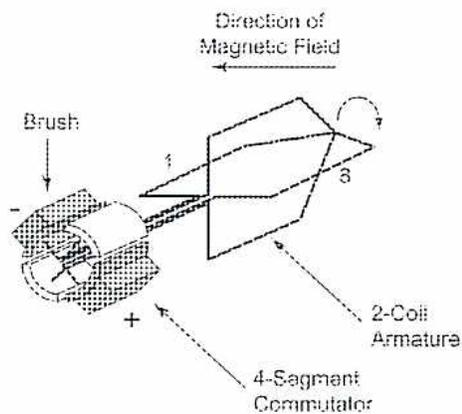
Figure 14
Simple DC Generator
Fig. 15 shows an armature coil with three turns. The ends of the coil are connected to commutator bars.
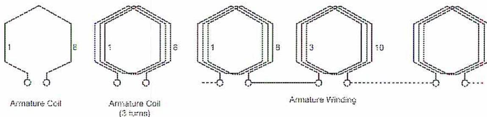
Figure 15
Armature Coil
Fig. 16 shows a typical drum-type armature with the lap windings embedded in slots. Lap windings are arranged in slots on the drum to allow parallel paths for armature current. The number of parallel paths is always the same as the number of poles. This design is well suited for high current DC generator applications. The ends of the armature coils are terminated on adjacent bars of the commutator. The number of brushes is the same as the number of poles.
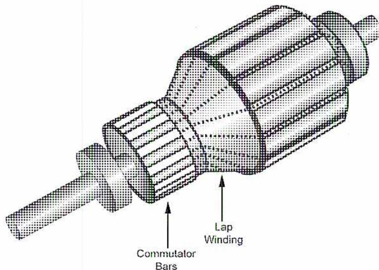
Figure 16
Drum-type Armature
Fig. 17 shows the lap winding arrangement for a 4-pole DC generator. The coils of the winding are connected to commutator bars labelled A - L.
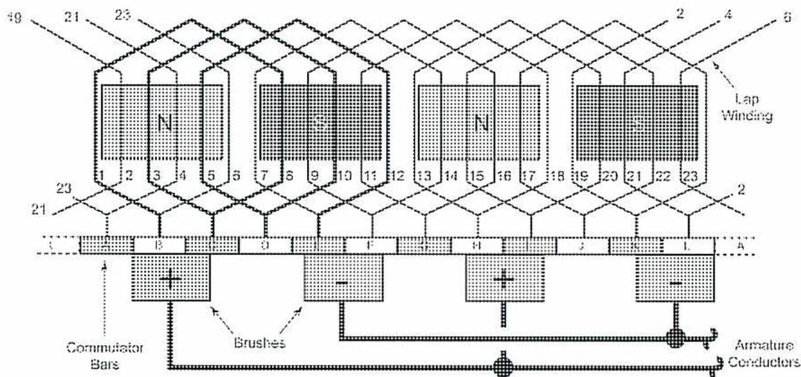
Figure 17
Lap Winding Arrangement
Fig. 18 shows a simplified connection drawing of same winding.
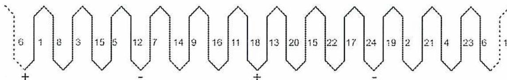
Figure 18
Lap Winding Connection Drawing
Wave windings are used in high voltage applications. In this arrangement, the ends of the coil are brought out to commutator bars separated by the distance between poles.
Only 2 brushes (i.e. one brush pair) are necessary but more brush pairs may be used. The brushes are separated by the distance between poles. The number of parallel paths is always 2. See Figs. 19(a), (b), and (c).
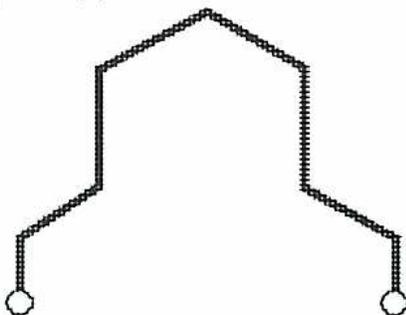
Figure 19(a)
Wave Winding
![Figure 19(b): Wave Winding Arrangement. This diagram shows a cross-section of an armature with four magnetic poles labeled N (North) and S (South). The armature conductors are numbered 1 through 26. The winding is represented by a zigzag line connecting these conductors. Below the armature is a commutator with bars labeled a through l. Four brushes are shown in contact with the commutator bars, connected to positive and negative terminals. Labels include 'Commutator Bars', 'Brushes', and 'Armature Conductors'.](fa859e4e468bfb2710a94527f2c504af_img.jpg)
The diagram illustrates a wave winding arrangement in an armature. It features four magnetic poles, alternatingly labeled North (N) and South (S). The armature windings are connected in a continuous wave pattern across all poles. Below the armature, a commutator is shown with 12 bars labeled 'a' through 'l'. Four brushes are positioned on the commutator, with two connected to positive terminals and two to negative terminals. The brushes are in contact with the commutator bars, which are further connected to the armature conductors.
Figure 19(b)
Wave Winding Arrangement
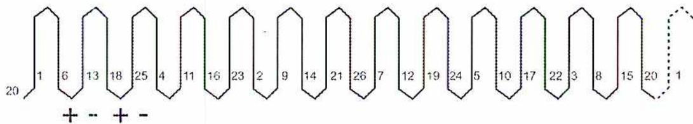
This connection drawing shows the sequence of armature conductors for a wave winding. The conductors are numbered in a sequence: 1, 6, 13, 18, 25, 4, 11, 16, 23, 2, 9, 14, 21, 26, 7, 12, 19, 24, 5, 10, 17, 22, 3, 8, 15, 20, and then back to 1. Below this sequence, polarity signs are indicated: +, -, +, -. The number 20 is shown at the far left, and the number 1 is at the far right, indicating the start and end of the sequence.
Figure 19(c)
Wave Winding Connection Drawing
Explain the principles, applications, and load/voltage characteristics of generators.
There are three main types of DC generators. Each type is named according to the field and armature winding connections.
In this type of generator, the field winding is in series with the armature winding. Fig. 20 shows the armature current \( I_a \) flowing through the brushes to the field coil and to the load. A variable resistor (diverter) is used to vary the field current.
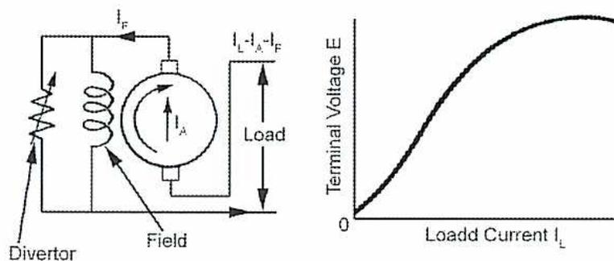
The figure contains two parts. On the left is a circuit diagram showing an armature (a circle with a clockwise arrow inside labeled \( I_A \) ) connected in series with a field winding (coil). A variable resistor, labeled 'Divertor', is connected in parallel with the field winding. The current through the field is \( I_F \) . The output is connected to a 'Load', where the load current is indicated as \( I_L = I_A - I_F \) . On the right is a graph with 'Terminal Voltage E' on the vertical axis and 'Loadd Current \( I_L \) ' on the horizontal axis. The curve starts at the origin (0,0), rises sharply with a positive slope, and then curves to become nearly horizontal as it reaches saturation.
Figure 20
Series-wound Generator
Series-wound generators use very low resistance field coils. These coils consist of large diameter copper conductors. As shown in the load/current curve in Fig. 20, any increase in armature current causes an increase in flux and a corresponding increase in the voltage at the generator output terminals.
The field windings of a shunt-wound generator are in parallel with the armature windings. Fig. 21 shows the field windings and the load/current characteristics. A field regulator (rheostat) is used to adjust the field. The shunt windings have a reduced voltage as generator load increases. This is due to the increased voltage drop ( \( IR \) drop) through the armature. In other words, an increase in load current causes a decrease in terminal voltage.
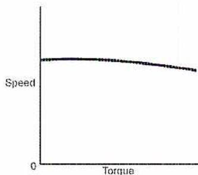
The figure consists of two parts. On the left is a circuit diagram of a shunt-wound generator. It shows a central armature (circle with a dot) connected in parallel with a field winding (coil) and a load. A field regulator (rheostat) is connected in series with the field winding. The field current is labeled \( I_F \) , the armature current is \( I_A \) , and the load current is \( I_L \) . A formula above the load indicates \( I_L = I_A - I_F \) . On the right is a graph of Terminal Voltage \( E \) versus Load Current \( I_L \) . The curve starts at a no-load voltage and decreases as the load current increases.
Figure 21
Shunt-wound Generator
Compound-wound generators (Fig. 22) have series and shunt fields. One of the field windings is in parallel with the generator armature and the other is in series. Both windings are placed on the stator.
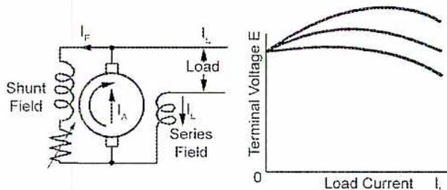
The figure consists of two parts. On the left is a circuit diagram of a compound-wound generator. It shows a central armature (circle with a dot) connected in parallel with a shunt field (coil) and a series field (coil). The shunt field is connected across the armature terminals. The series field is connected in series with the armature. The shunt field current is labeled \( I_F \) , the armature current is \( I_A \) , and the load current is \( I_L \) . On the right is a graph of Terminal Voltage \( E \) versus Load Current \( I_L \) . Three curves are shown: one that is flat (flat-compounded), one that rises (over-compounded), and one that falls (under-compounded) as the load current increases from zero.
Figure 22
Compound-wound Generator
More turns in the series field produce a higher voltage with the same current. If enough turns are added to compensate for the voltage drop caused by armature resistance and armature reaction, the terminal voltage will be constant from a no-load condition to a full-load condition. This is known as a flat-compounded generator.
More than the minimum number of turns required for a flat-compounded machine will cause the terminal voltage under load conditions to be greater than its no-load value. The machine is then said to be over compounded .
Less than the minimum number of turns will result in an under-compounded machine. If the series field is connected so that its mmf opposes the mmf of the shunt field, an
increase in armature current will cause a decrease in flux and a corresponding decrease in the generated emf. This type of connection is called differential compounding.
Fig. 23 shows the circuit connections for a differentially-compounded DC generator. Note that the series-field connections are the reverse of those in Fig. 22.
![Circuit diagram and characteristic curve for a differentially-compounded DC generator. The circuit shows a shunt field winding in parallel with the armature, and a series field winding connected in series with the load. The series field is connected in reverse compared to a standard compound generator. The characteristic curve shows Terminal Voltage E on the y-axis and Load Current I_L on the x-axis. The curve starts at a high no-load voltage and decreases as load current increases, forming a concave-down shape.](52218820ae0a5a10bb2d604859f803e7_img.jpg)
Figure 23
Differentially Compounded Generator
Fig. 24 illustrates the variation in voltage from no-load to full-load conditions for various amounts of compounding. This compares with the characteristic curves shown in Fig. 22.
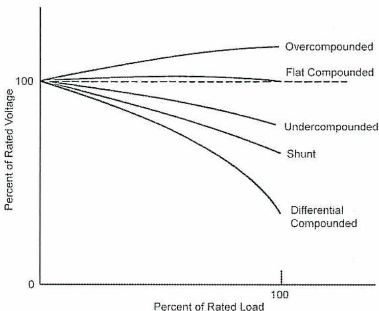
Figure 24
DC Generators: Voltage/Current Characteristics
Over-compounded generators are used when the power is transmitted over long distances. This winding arrangement uses the rise in terminal voltage to compensate for the voltage drop ( \( IR \) ) in the transmission lines.
Flat-compounded generators are used when an unvarying voltage is required and the distance of transmission is short.
Shunt and under-compounded generators are more stable for parallel operation than flat and over-compounded machines.
Differential-compounded generators are used when inherent overload protection is more desirable than a fixed voltage. Examples of its application are in generators supplying electric winches and dredges, in which an overload or short circuit causes sufficient voltage drop to limit the magnitude of the current to a safe value.
Fig. 25 shows the circuit and load characteristics for a separately-excited generator. It is shunt wound with a separate supply to the field. This produces a particularly flat voltage characteristic.
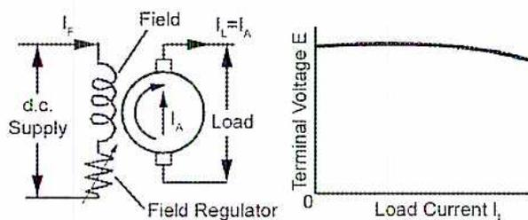
The diagram illustrates the circuit and load characteristics for a separately excited generator. On the left, a circuit diagram shows a 'd.c. Supply' connected to a 'Field' winding through a 'Field Regulator'. The field current is labeled \( I_f \) . The generator's armature is connected to a 'Load', with the armature current labeled \( I_A \) . The load current is indicated as \( I_L = I_A \) . On the right, a graph plots 'Terminal Voltage E' on the vertical axis against 'Load Current \( I_L \) ' on the horizontal axis. The curve starts at a constant voltage and remains nearly flat for a range of load currents before slightly drooping at higher currents.
Figure 25
Separately Excited Generator
Describe the parallel operation and voltage regulation of DC generators.
Generators are often operated in parallel to satisfy load demands (see Fig. 26). When the load varies, generators can be switched from off-line to on-line or vice versa.
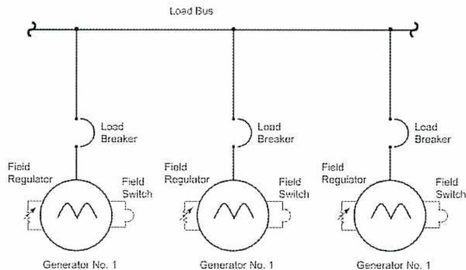
The diagram illustrates three DC generators connected in parallel to a single 'Load Bus' at the top. Each generator is represented by a circle with a zigzag symbol inside. Each generator is connected to the bus via a 'Load Breaker'. Each generator also has a 'Field Regulator' (represented by a rectangle with a diagonal arrow) and a 'Field Switch' (represented by a switch symbol) connected to its field winding. All three generators are labeled 'Generator No. 1' at the bottom.
Figure 26
Parallel DC Generators
The first step when bringing a generator on-line is to close the field switch and engage the prime mover. The voltage of the incoming machine is then adjusted to equal the bus voltage. The load breaker can be closed when the two voltages are equal. This procedure is satisfactory for paralleling shunt, under-compounded, and flat-compounded machines.
Note: When paralleling shunt machines, it is recommended to raise the voltage of the incoming machine slightly above the bus voltage to ensure that it is taking load at the instant the load breaker is closed. This precaution is not necessary for both the flat and under-compounded machines because the series field helps to build up voltage quickly when the units are brought on-line.
The output terminals of DC generators are always checked for polarity, especially if a new generator has been installed or an existing generator has been repaired.
Once the DC generators are on-line, the load can be shared or balanced by adjusting the field rheostats. The output voltage of the machine that takes on more load is raised. The
Once the DC generators are on-line, the load can be shared or balanced by adjusting the field rheostats. The output voltage of the machine that takes on more load is raised. The opposite is true for the machine that loses some load. The load on each generator can be observed on individual ammeters.
Although the transfer of load between DC generators is accomplished indirectly by adjusting the field strength, the energy supplied by each generator still depends on the energy supplied by the prime mover. An automatic governor is used to control speed. For example, increasing the field excitation of one machine causes it to take more load. This causes the machine to slow down, and the automatic governor admits more energy to the prime mover.
As shown in the preceding paragraph, the operating speed of DC generators, operating in parallel, can vary. This is different from AC generators which are more speed dependent because they must produce a constant frequency. In other words, AC generators with the same number of poles are operated at the same speed.
In general, for compound machines to operate successfully in parallel, it is necessary to parallel their series fields. This is accomplished by an equalizer connection as shown in Fig. 27.
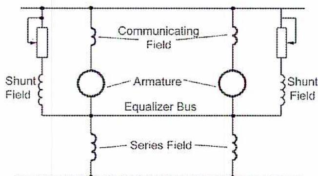
The diagram illustrates the electrical connections for two compound generators operating in parallel. At the top, a horizontal line represents the main output bus. Below it, another horizontal line is labeled 'Equalizer Bus'. Two armatures, represented by circles, are connected between the main bus and the equalizer bus. Each armature has a 'Shunt Field' (indicated by a label on the left and right) connected in parallel across it. Each armature also has a 'Series Field' (labeled at the bottom) connected in series with the main bus. An 'Equalizer Bus' connects the series fields of both generators. Rheostats, shown as variable resistors, are connected in series with the shunt fields of each generator. A label 'Communicating Field' points to the shunt field of the left generator.
Figure 27
Two-Wire Compound Generators in Parallel
Consider two identical generators operating in parallel without an equalizer and with the load carefully balanced between the two. Any attempt to transfer some of the load from one machine to the other by adjustment of the field rheostats results in the machine with the greater excitation taking the entire load and driving the other as a motor.
Without an equalizer, the machine that accepted some load has its series field strengthened, whereas the machine that gave up some load has its series field weakened. This would serve to increase the \( E \) of the machine that accepted load and to decrease the \( E \) of the machine that gave up some load and results in an additional load transfer.
Hence, without an equalizer connection, any attempt to transfer some load between compounded machines in parallel results in a complete load swing to one machine and motorization of the other. Furthermore, a motorization of a compound generator without an equalizer results in a reversal of current through its series field, shunt field and the armature. Motorization of a compound generator with equalizer causes reversed current flow in shunt field and armature. The direction of the series field current remains unchanged as the series field is fed from the other generators through the equalizer. Motorization of a generator reverses the polarity of the residual magnetism and the machine will have reversed polarity. However, since it is standard practice to use equalizer connections with compounded machines, such difficulties as heavy load swings, motorization, and reversed polarity are not encountered during routine operations.
When compounded machines of different kW ratings are paralleled, the equalizer ensures a division of load in proportion to the kW ratings of each machine. The total bus current is divided by the series fields in the inverse ratio of their respective series-field resistance. Because of its lower series-field resistance, the series field of the larger machine will take a higher percentage of the bus current.
The process of voltage control involves changing the resistance of the field windings. More or less resistance means an increase or decrease of current in the field, which translates to more or less voltage at the output terminals of the generator. Voltage can be controlled automatically or manually.
Manual voltage control usually takes place through a rheostat which is connected in series, parallel, or series/parallel with the field windings. A rheostat is a type of variable resistance device. Ultimately, the rheostat allows the field current to be changed.
Automatic voltage regulators (AVRs) may be used in applications where the load can change without warning. AVRs allow an operator to enter the desired voltage (setpoint). Sophisticated AVRs can quickly sense the difference between the current output voltage and the desired output voltage. The regulator makes changes to the field current based on the magnitude of the difference between the current output voltage and the setpoint (error) and how fast the error is increasing or decreasing.
Voltage regulation is based on the difference between the output voltage of a generator at no-load and the output voltage at full-load. Voltage regulation is determined while the generator is running at constant speed. It is usually expressed as a percentage.
$$ \text{Voltage Regulation} = \frac{(\text{no - load volts}) - (\text{full - load volts})}{\text{full - load volts}} \times 100 $$
Fig. 24 shows the voltage/current characteristics of various DC generators. However, the best regulation is obtained with a flat-compounded machine. The series machine has very little regulation (see Fig. 20).
Review the principle of DC motor operation, including torque development and back emf.
In a DC generator, mechanical energy is changed into electrical energy by moving a conductor (armature) through a magnetic field (stator). In a DC motor, electrical energy is supplied to a conductor in an electrical field which establishes a magnetic field. Interaction of the armature field and the stator field produces mechanical energy.
Torque is defined as the measurement of the action of a force on a body that tends to cause the body to rotate. In the context of motors, the measurement of the force that tends to rotate the armature is called the torque of the motor. Torque is an important characteristic of a motor because torque is related to the amount of work that the motor is able to do.
Armature windings on a DC motor are wound in the same manner as generator windings. When a voltage is applied to the brushes of a motor, current flows into the positive brush, through the commutator and out the negative brush. See Fig. 28.
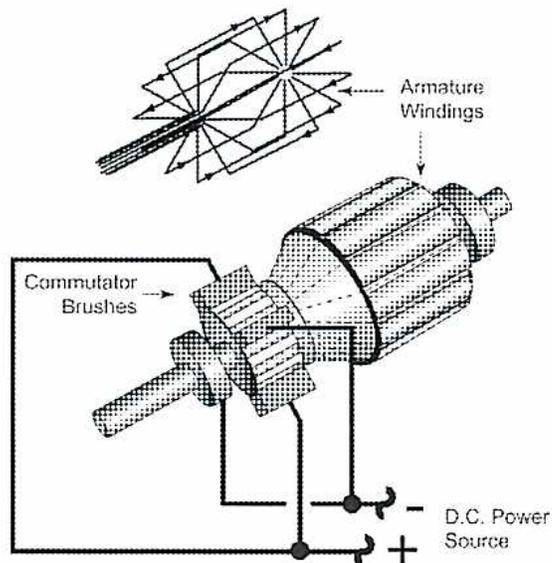
The diagram illustrates the electrical circuit of a DC motor. A cylindrical armature is shown with its windings connected to a commutator. Two brushes are in contact with the commutator, one on each side. These brushes are connected to a D.C. Power Source, represented by a battery symbol with '+' and '-' terminals. An inset at the top provides a detailed view of the armature windings, showing the direction of current flow through the conductors. Labels with arrows point to the 'Armature Windings', 'Commutator Brushes', and 'D.C. Power Source'.
Figure 28
Current Flow
Armature conductors are wound so that all conductors under the south field poles carry current in one direction, and all conductors under the north field poles carry current in the opposite direction.
Fig. 29 shows the distribution of armature currents in a four-pole motor for a given polarity of applied terminal voltage. When voltage is applied to the motor, current flows through the field winding, establishing the magnetic field. Current also flows through the armature winding from the positive brushes to the negative brushes. Because each armature conductor under the four pole faces is carrying current in a magnetic field, each of these conductors has a force exerted on it, tending to move it at right angles to that field.
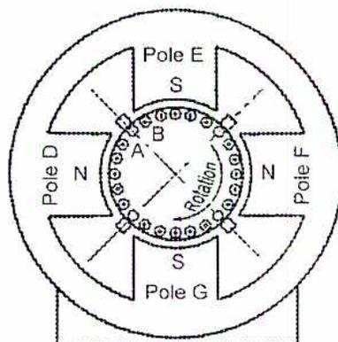
A cross-sectional diagram of a four-pole DC motor. The stator has four poles: North (N) and South (S) poles labeled as Pole D, Pole E, Pole F, and Pole G. The armature is the central rotating part, with conductors shown as dots (out of the page) and crosses (into the page). Arrows indicate the direction of current flow in the conductors. A central arrow indicates the direction of rotation.
Figure 29
Four-Pole DC Motor
Fig. 30 shows the right-hand rule for a conductor carrying current. The thumb points in the direction of the current and the fingers wrap around the conductor in the direction of the magnetic field produced by the current. An application of this rule to the armature conductors under the north pole D in Fig. 29 shows the magnetic field to be strengthened under the conductors, resulting in an upward force on the conductors. Similarly, force is exerted to the right on the conductors under south pole E , downward on the conductors under north pole F , and to the left on the conductors under south pole G .
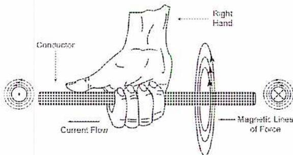
A diagram illustrating the right-hand rule. A right hand is shown gripping a horizontal conductor. The thumb is extended parallel to the conductor, pointing to the right, labeled 'Current Flow'. The other four fingers are curled around the conductor, with arrows indicating the direction of the 'Magnetic Lines of Force'. Concentric circles around the conductor represent these magnetic lines, with dots and crosses indicating the direction of the field.
Figure 30
Right-Hand Rule
Thus, there is a force developed on all the active armature conductors tending to turn the armature in a clockwise direction. The sum of these forces in newtons multiplied by the radius of the armature in metres is equal to the total torque developed by the motor in newton metres (Nm).
If the armature is free to turn, that is, if the connected load is not too great, the armature will begin to rotate in a clockwise direction. As the armature rotates and the conductors move from under a pole into the neutral plane, the current is reversed in them by the action of the commutator. For example, in Fig. 29, as the conductor at A moves from under the north pole and approaches the neutral plane, the current is outward. At the neutral plane, the current is reversed so that as it moves under the south pole as at B it carries current inward. Thus, the conductors under a given pole carry current in the same direction at all times.
It should be evident from Fig. 29 that if the armature current were reversed by reversing the armature leads, but leaving the field polarity the same, torque develops in a counter-clockwise direction. However, if both armature-current direction and field polarity were changed, torque develops in a clockwise direction.
The direction of rotation of a DC motor may be reversed by reversing either the field or the armature connections. If both are reversed, the direction of rotation remains unchanged.
The force developed on each conductor of a motor armature is due to the combined action of the main field and the field around the conductor. It follows, then, that the force developed is directly proportional to the strength of the main field flux and to the strength of the field around each conductor. The field around each armature conductor depends on the amount of armature current flowing in that conductor. Therefore, the torque developed by a motor may be shown to be
$$ \begin{aligned} T &= K\Phi I_a \\ \text{where } T &= \text{torque, newton metres} \\ K &= \text{a constant depending on the physical dimensions of the motor} \\ \Phi &= \text{total number of lines of force per pole} \\ I_a &= \text{armature current, amperes} \end{aligned} $$
This equation is of use in analyzing a motor's performance under various operating conditions.
An electromotive force (emf) is induced in the armature winding of a DC motor as it moves through the magnetic field. This voltage is called back emf or counter emf (cemf). Counter emf is counter to, or opposes, the applied voltage at the armature brushes.
Because the armature windings of a motor are made of copper, the resistance of the armature is very small (less than one ohm). Applying almost any voltage to such a 1-ohm
armature at rest causes a huge short-circuit current to flow through it. If the armature was jammed (Fig. 31) so that it could not turn, it would heat up and burn out from all the current. But, because the armature is free to turn, the inrushing current causes the armature to turn, cutting the lines of force and creating an induced cemf.
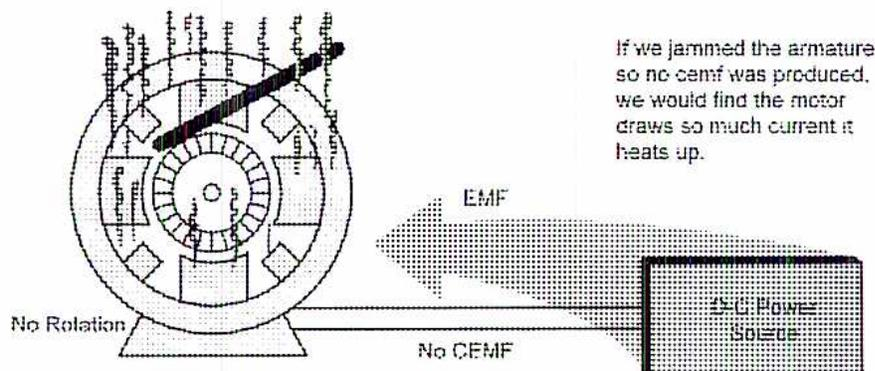
The diagram illustrates a motor armature connected to a D.C. Power Source. The armature on the left is labeled "No Rotation" and has a thick black bar across it indicating it is jammed. A large shaded arrow labeled "EMF" points from the power source to the armature. Below it, a thin line labeled "No CEMF" indicates no opposing force. A text box to the right explains: "If we jammed the armature so no cemf was produced, we would find the motor draws so much current it heats up."
Figure 31
Jammed Armature
Since the cemf opposes the line voltage, it acts to cut down the short-circuit current flow. This cemf acts as an automatic current limiter which reduces the flow of current to the armature to an adequate level to drive the motor but not enough to heat the armature to where it is in danger of burning out. Therefore, the power supply to the armature operates as a true electrical load (Fig. 32) instead of a short circuit and the motor receives useful power to support its operation.
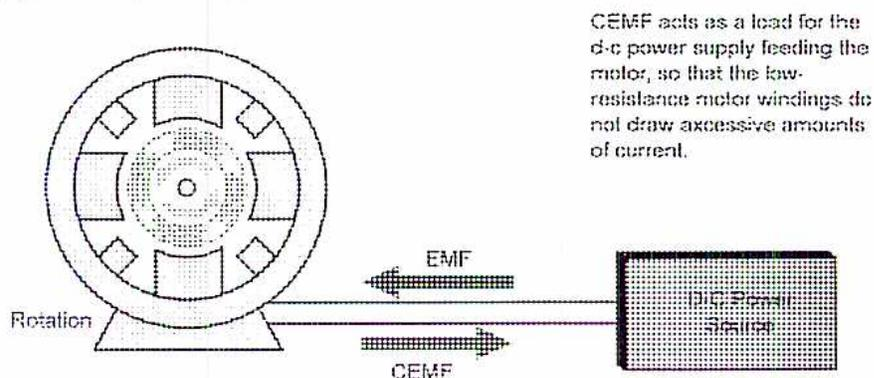
The diagram shows a motor armature in operation, labeled "Rotation". It is connected to a D.C. Power Source. Two arrows are shown between them: a shaded arrow labeled "EMF" pointing toward the armature, and an opposing shaded arrow labeled "CEMF" pointing back toward the power source. A text box to the right states: "CEMF acts as a load for the d-c power supply feeding the motor, so that the low-resistance motor windings do not draw excessive amounts of current."
Figure 32
True Electrical Load
Counter emf is proportional to the number of turns in the armature coils, the length of each conductor that passes under a pole, the velocity of the armature, and the strength of the magnetic field produced by the stator windings.
$$ \text{Armature current} = \frac{\text{applied voltage} - \text{counter emf}}{\text{armature resistance}} $$
Calculate torque, speed, and current of a DC motor.
Torque is measured in newton metres (Nm). Torque is the vector sum of the resultant magnetic forces multiplied by the radius of the armature measured in metres.
If the armature is free to turn, it begins to rotate in a clockwise direction. The armature coils under the north pole move towards the south pole. As they move into the interpole position (neutral plane), the polarity of the current is reversed by the action of the commutator. The momentum of the armature carries it far enough towards the next pole so that the interaction of the magnetic fields of the armature and the stator will keep the armature rotating. The action of the commutator keeps the conductors under one pole carrying current in the same direction at all times.
The armature rotates counter-clockwise if the polarity of the applied voltage is reversed while the polarity on the stator windings is kept the same.
Note: The direction of rotation of a DC motor may be reversed by reversing the polarity of either the stator field or the armature field. If both are reversed, the direction of rotation remains the same.
The force exerted on a current-carrying conductor when in a magnetic field depends upon the strength of the field, the amount of current flowing, and the length of the conductor.
The torque developed by a d-c motor will be the sum of all these forces exerted on the individual conductors and can be expressed by the equation:
$$ F = B \times I \times L $$
Where \( F \) = Turning force newtons
\( B \) = Flux density, teslas
\( L \) = Total length of conductors, metres
\( I \) = Current in conductor, amperes
Note: The symbol used for magnetic flux is \( \Phi \) (phi) and the unit is the weber Wb.
The weber is the flux which when reduced to zero in one second produces one volt in a coil of one line lying in this flux.
Magnetic flux density is the number of lines of flux ( \( \Phi \) ) passing through a unit area \( A \) set at right angles to the flux.
The symbol used for magnetic flux density is \( B \) and the unit is the tesla T.
$$ B = \frac{\Phi}{A} $$
and 1 tesla = 1 weber per square metre
or 1 T = 1 Wb/m
2
The armature of a DC motor has 650 conductors of which 70% lie under the pole faces at any given instant. The flux density under the poles is 0.7 T. If the armature diameter is 180 mm, its length 100 mm and the current in each conductor is 20 amperes.
Find (a) The total force tending to rotate the armature
(b) The torque exerted by the armature
Using \( F = B I L \)
Where \( F \) = force (newtons)
\( B \) = Flux density = 0.7 T
\( L \) = Total conductor length
$$ \text{Force} = 0.7 \times 20 \times 650 \times 0.7 \times \frac{100}{1000} $$
Total Force = 637 Newtons
Torque = Force \( \times \) Radius
$$ = 637 \times \frac{90}{100} $$
Torque exerted = 57.33 Nm
A reduction of the field flux of a motor causes the motor speed to increase. The reduction of field strength reduces the counter \( E \) of the motor because fewer lines of force are being cut by the armature conductors. A reduction of the counter \( E \) permits more armature current to flow. This increase in current causes a larger torque to be developed because the increase in armature current much more than offsets the decrease in field flux.
The increased torque causes the motor speed to increase, thereby increasing the counter \( E \) in proportion. The speed and counter \( E \) increase until the armature current and the torque are reduced to values just large enough to supply the load at a new constant speed.
An increase in the field strength causes a decrease in the motor speed for similar reasons. A greater counter \( E \) reduces the armature current and the torque, and the motor speed decreases. Thus, the motor slows down until the counter \( E \) and the armature current reach values such that the load is again carried at a constant speed.
The fact that the speed of a motor varies with the field excitation provides a convenient means for controlling the speed of shunt and compound motors. The shunt-field current and, therefore, the field flux may be varied by a field rheostat. Reducing resistance in the field circuit causes a decrease in speed. This is the most common method of motor-speed control.
Rated armature voltage in North America, for larger DC motors, falls between 250 to 500 VDC. An unloaded motor may run at 1200 RPM with 500 volts applied. The same unloaded motor would run at approximately 600 RPM with 250 volts applied.
Specifications of motor performance are listed on the nameplate of the motor. This data includes the base speed of the motor at rated voltage and rated full-load amps. At constant field flux, the relationship between the voltage applied to the armature and speed is linear.
Calculate the full-load speed of a DC motor operating from a 480 V supply, given:
\( R_a = 0.8 \Omega \) , full-load armature current is 60A, flux/pole is 0.03Wb. It is a four-pole motor with a simple wave-wound armature with 45 slots and 12 conductors/slot.
\( N \) = Speed of motor, rev/min
\( V \) = Supply voltage to motor
\( I_a \) = Armature current
\( R_a \) = Resistance
\( Z \) = Number of armature conductors
\( \Phi \) = Flux/pole
\( A \) = Number of parallel paths of the armature winding
Note: Lap wound armature – number of parallel paths in the armature is always equal to the number of poles
Wave wound armature – number of parallel paths is always two, regardless of the number of poles provided for the motor
\( P \) = Number of poles
$$ N = \frac{(V - I_a R_a)}{Z \Phi} \times \frac{60 A}{P} $$
$$ N = \frac{(480 - 60 \times 0.8)}{540 \times 0.03} \times \frac{60 \times 2}{4} $$
$$ N = \frac{(480 - 48)}{16.2} \times \frac{120}{4} $$
$$ N = \frac{432}{16.2} \times 30 $$
$$ N = 26.67 \times 30 $$
$$ N = 800 \text{ r/min} $$
A 480 V single phase DC motor is rated at 10 kW and operates at a power factor of 0.85 (lagging), with an efficiency of 92%. Calculate the current taken from the power supply.
$$ \begin{aligned}\text{Motor output} &= 10.0 \times 1000 \\ &= 10000 \text{ W}\end{aligned} $$
$$ \begin{aligned}\text{Motor input} &= 10000 \times \frac{100}{92} \\ &= 10870 \text{ W}\end{aligned} $$
$$ \text{But } VI\cos\phi = P $$
$$ \begin{aligned}I &= \frac{P}{V\cos\phi} \\ &= \frac{10870}{480 \times 0.85} \\ &= \frac{10870}{408} \\ &= 26.64 \text{ A}\end{aligned} $$
$$ \text{Motor current} = 26.64 \text{ A} $$
Explain the principle and application of shunt, series, and compound-wound DC motors including speed control.
The shunt motor (Fig. 33) is the most common type of DC motor. It is connected in the same way as the shunt generator, that is, its field winding is connected across the power supply line in parallel with the armature winding. This creates an independent path for current flow through each winding. The field current can be held constant while the armature circuit can be used to control the motor. A field rheostat is usually connected in series with the field.
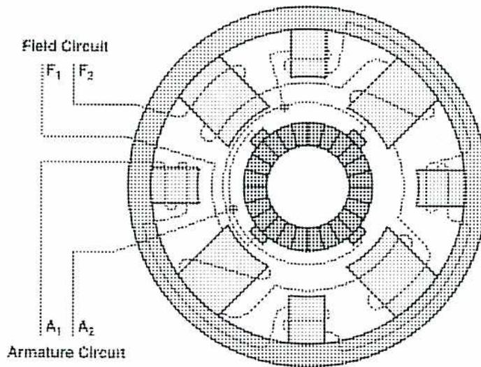
The diagram shows a cross-section of a DC motor. It features a central armature with multiple windings, surrounded by several field windings. On the left, two sets of terminals are shown. The top set is labeled 'Field Circuit' with terminals F 1 and F 2 . The bottom set is labeled 'Armature Circuit' with terminals A 1 and A 2 . Dotted lines trace the connections from these terminals to the respective windings within the motor's structure, illustrating their independent parallel paths.
Tracing the wiring will indicate that the field circuit and the armature circuit are independent. Therefore, this is a shunt motor. You will notice that the interpoles are in series with the armature circuit to enable them to respond to armature current changes.
Figure 33
Shunt Motor
A shunt motor has good speed regulation and is classed as a constant-speed motor even though its speed does decrease slightly with an increase in load. With an increase in load, there is a reduction in armature speed. This slowing of the armature reduces the cemf, which produces an increase in the amount of current flowing through the armature. This
causes an increase in torque necessary to bring the armature speed back to normal. The reverse occurs when the load is decreased.
Fig. 34 shows the characteristic curve of Torque \( \times \) Speed for a shunt motor supplied from a constant voltage source and with the field rheostat set to give full-field amperes.
A line graph showing the relationship between Speed (Y-axis) and Torque (X-axis) for a shunt motor. The Y-axis is labeled 'Speed' and has a '0' at the origin. The X-axis is labeled 'Torque'. The curve starts at a point on the Y-axis and is nearly horizontal, showing a very slight downward slope as Torque increases.
Figure 34
Characteristic of Shunt and Separately-Excited DC Motors
The curve is also applicable to separately excited DC motors because their field connections are the same as the shunt-wound motor.
Speed control of a shunt motor can be accomplished through the use of a rheostat either in series with the field winding (Fig. 35), the armature winding (Fig. 36), or both. A rheostat in series with the field winding is the most common method of changing the speed of a shunt motor. This gives preference over the use of an armature rheostat since the field current is less than the armature current. This results in less of a power loss across the rheostat. This allows for more current to be available for motor operation.
With the insertion of more resistance in series with the field, there is less current flowing through the field. This causes a drop in the strength of the field and the motor speeds up. When fewer flux lines are being cut by the rotating armature, the cemf drops. This allows more current to flow in the armature increasing the torque. The motor quickly speeds up, causing an increase in the cemf. The current is then reduced to a value that produces the required amount of torque.
By inserting less resistance in series with the field, the field strength increases, causing the motor to slow down.
With any part of the rheostat in the circuit, a portion of d-c supply voltage is dropped across it and less current flows through the motor element in series with it
in the case of the field rheostat, decreasing the current flow causes the motor to speed up
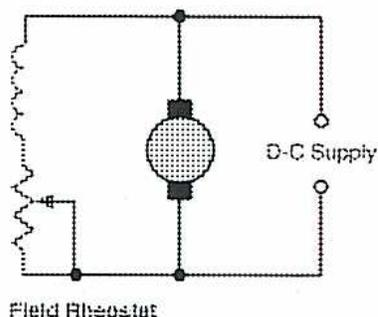
Figure 35
Field Winding Rheostat Control
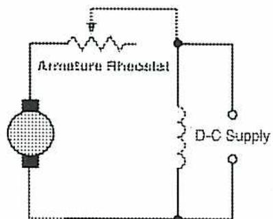
Decreasing the armature current slows the motor down
Figure 36
Armature Winding Rheostat Control
Care must be taken never to open (Fig. 37) the field circuit of a shunt motor that is running unloaded. The motor tends to run away rather than stop because the residual magnetism of the pole pieces maintains a weak field. The armature circuit can still draw current since the field winding and the armature are in parallel across the power supply.
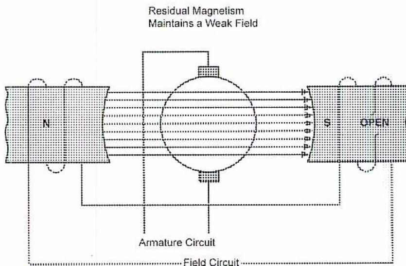
Residual Magnetism
Maintains a Weak Field
With a field winding open, the shunt motor tends to run away rather than stop because residual magnetism of the pole pieces maintains a weak field. The armature circuit, of course, can still draw current because the field winding and the armature are in parallel across the power supply.
Figure 37
Open Field Windings
In the series motor (Fig. 38), the field is connected in series with the armature. As the series field must carry full armature current, it is wound with a few turns of comparatively large wire. Any change in load causes a change in armature current and also a change in field flux. Therefore as the load changes, the speed changes.
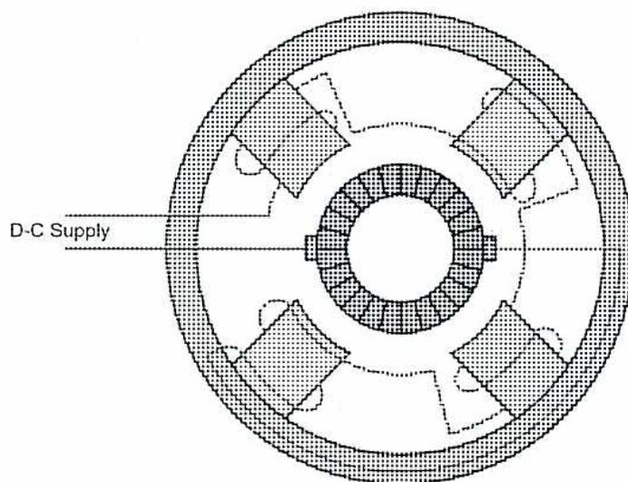
Tracing the wiring diagram will indicate that the field windings and the armature circuit are in series. Therefore, this is a series motor.
Figure 38
Series Motor
The speed of a shunt motor is inversely proportional to the field flux. This is true also in a series motor. The armature circuit \( IR \) drop also varies with the load, but its effect is very small compared with the effect of the field flux. Therefore, the speed of a series motor depends almost entirely on the flux: the stronger the field flux, the lower the speed. Likewise, a decrease in load current and therefore in field current and field flux causes an increase in speed. Thus, the speed varies from a very high speed at light loads to a low speed at full load.
A series motor is not a constant speed motor. In the shunt motor when the torque is increased, the speed increases, and vice versa. Torque and speed are inversely proportional in the series motor. This means that when the torque is low, the speed is high; when the torque is high, the speed is low.
If a series motor is started or run without a load, it has a tendency to “run away.” Without a load, a low torque is required to turn the armature. The motor then speed up in an attempt to increase cemf to reduce the armature current required to keep the torque low. But, as the motor runs faster to reduce the armature current, the field flux and cemf also drop. Therefore, the motor runs faster to build up more cemf. The speed continues to increase until the physical force of rotation damages the motor (Fig. 39) through a combination of centrifugal force and friction heating. For this reason, the load should never be removed from a series motor.
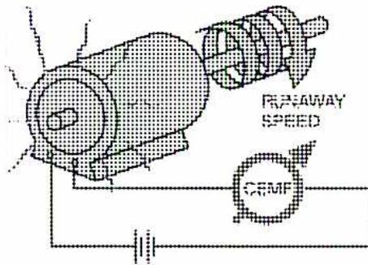
A schematic diagram of a series motor. The motor is represented by a circle with a central dot. A belt and pulley system is connected to the motor's shaft, with a label "RUNAWAY SPEED" above it. The motor is connected in a series circuit with a DC voltage source (represented by a battery symbol) and a circle labeled "CEMF" (Counter Electromotive Force).
Figure 39
Series Motor Runaway Speed
A series motor is used only where load is directly connected to the shaft or geared to the shaft. Very small series motors usually have enough friction and other losses to keep the no-load speed down to a safe limit. The speed-load curve of a typical series motor is shown in Fig. 40. The characteristic curve is ideal for application to cranes or for traction uses where high torque is required at low speeds.
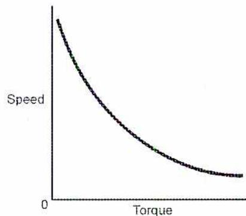
A graph showing the characteristic curve of a series DC motor. The vertical axis is labeled "Speed" and the horizontal axis is labeled "Torque". The origin is marked with "0". A curve starts at a high speed on the vertical axis and decreases as torque increases, approaching a horizontal asymptote.
Figure 40
Characteristic of Series DC Motors
Inserting resistance in the armature circuit, as shown in Fig. 41, controls the speed of a series motor.
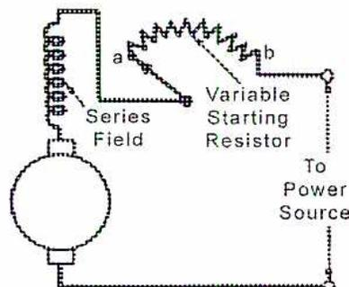
A circuit diagram for speed control of a series motor. The motor is shown as a circle. It is connected in series with a "Series Field" winding and a "Variable Starting Resistor". The resistor is shown as a zigzag line with a tap labeled "a" and another labeled "b". The circuit is connected "To Power Source".
Figure 41
Series Motor Speed Control
There are two types of compound motors:
In the cumulative-compound motor, Fig. 42, a shunt field winding and a series field winding are wound in the same direction. In this combination, the windings aid each other in generating the required magnetic flux. This type, called a series-shunt motor, consist of a series motor with a few shunt turns to prevent the motor from running away under no-load conditions. This motor has a definite no-load speed and may be safely operated at no-load.
Speed regulation in a cumulative-compound motor is not as good as in a shunt motor because as load is added, the increase in flux causes the speed to decrease more than a shunt motor.
A cumulative-compound motor produces more torque than a shunt motor for a given amount of armature current. This is due to the increased flux from the series field.
A cumulative compound motor is used in applications where a fairly constant speed is required with irregular loads. Examples are reciprocating machines such as presses and shears.
There is another type of cumulative-compound motor in which the series characteristic of high starting torque is used to start the motor. Once at its standard running speed, the series winding is disconnected by a switch. The motor then operates by the speed-regulating characteristics of the shunt motor as described in the shunt motor paragraph earlier in this objective.
![Circuit diagram of a cumulative-compound motor. It shows a DC voltage source connected to a motor armature and two field windings: a shunt field and a series field. The shunt field is connected in parallel with the armature, and the series field is connected in series with the armature. Arrows indicate the direction of current flow: clockwise for the shunt field and counter-clockwise for the series field. Labels 'Shunt Field Flux' and 'Series Field Flux' are present. To the right of the diagram, the text 'SERIES-SHUNT MOTOR' is written, followed by a paragraph explaining that in this cumulative-compound motor, a small shunt winding produces flux that adds the main series field, enabling the motor to retain the high-torque characteristic of a series motor and eliminating the tendency towards runaway under no-load conditions.](2763901b7a1fd1b5d704cdc450d12ed0_img.jpg)
SERIES-SHUNT MOTOR
In this cumulative-compound motor, a small shunt winding produces flux that adds the main series field. This enables the motor to retain the high-torque characteristic of a series motor, and eliminates the tendency towards runaway under no-load conditions.
Figure 42
Cumulative-Compound Motor
Fig. 43 shows the speed/torque characteristics of a cumulative-compound motor.
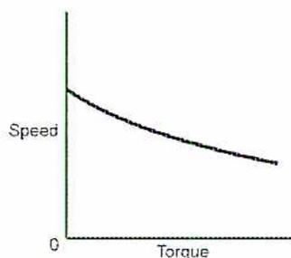
Figure 43
Speed/Torque Characteristics of Cumulative-Compound Motors
The differential-compound motor, Fig. 44, is a shunt motor with a small series field winding. But, the field windings are wound in opposite directions so that the series flux subtracts from the shunt flux. The motor operates at constant speed under varying load conditions.
Because the shunt field overrides the series field, the differential-compound motor does not have the good starting torque characteristic of series motor. The series field acts to
make the motor more sensitive to load changes. This gives better constant speed regulation than the standard shunt motor.
When an increase in load causes the motor to slow down, the following occurs:
The increase in series flux opposes and reduces the dominant shunt field flux. The decrease in field strength also causes the motor to increase in speed to build up the cemf. This causes the motor to react much more quickly to maintain its speed.
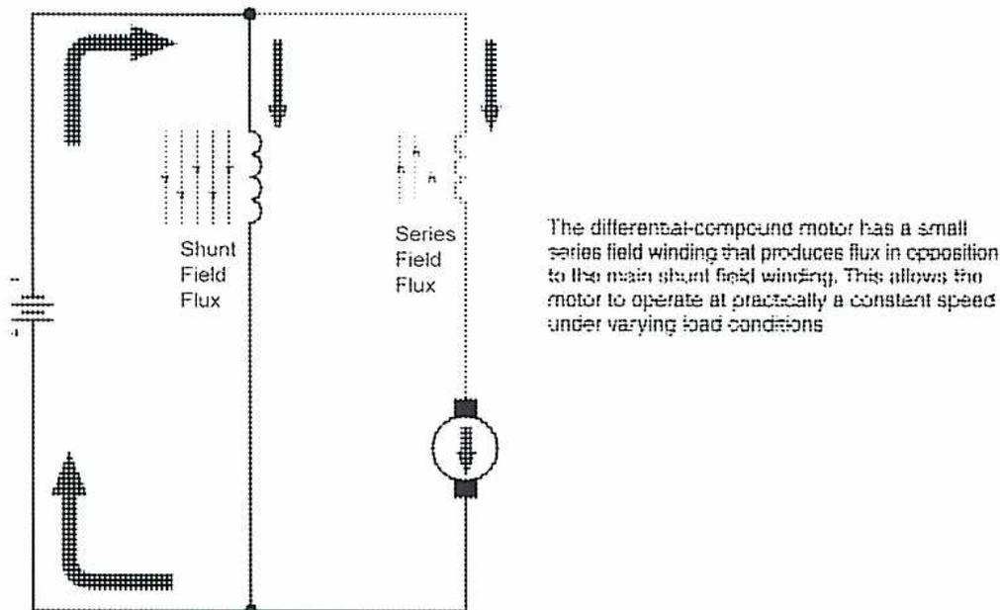
The differential-compound motor has a small series field winding that produces flux in opposition to the main shunt field winding. This allows the motor to operate at practically a constant speed under varying load conditions.
Figure 44
Differential-Compound Motor
Fig. 45 shows the speed/torque characteristics of a differential-compound DC motor.
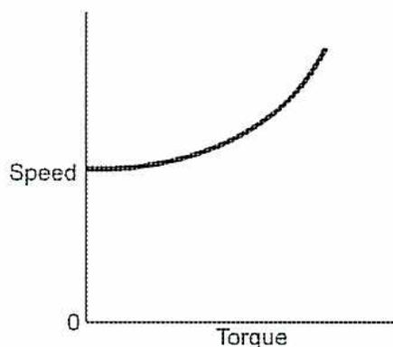
The graph shows Speed on the vertical axis and Torque on the horizontal axis. The curve starts at a constant speed at zero torque and then increases as torque increases, showing a positive slope.
Figure 45
Speed/Torque Characteristics of Differential-Compound Motors
The differential compound motor has a nearly constant speed at all loads but has poor torque characteristics at heavy loads and is seldom used. A shunt motor has nearly constant speed for most applications and much better torque characteristics.
Explain the principle and application of counter-E, current limit and time limit DC motor automatic starters.
Automatic starting of DC motors has several advantages over hand control. The settings on the starter can be arranged to give uniform acceleration throughout the motor run-up, and chances of improper operation which occur under hand control are eliminated.
There are three types of automatic starters:
Fig. 46 shows a wiring diagram for an automatic starter of the counter -E type with voltage sensitive relays. This type is sensitive to voltage and acts to cut out the armature resistance in steps as the motor back \( E \) builds up. Relays A, B and C are connected across the motor terminals where they measure the armature voltage. This will increase as the back \( E \) builds up.
The motor is started by pressing the start button This energizes the main contactor M which instantly closes the main contacts MX, to start the motor, and the auxiliary contacts M1, to seal the start button. The motor therefore starts with resistances R1, R2, and R3 in series with the armature. As the speed increases, the rising terminal p.d. (potential difference) energizes the relays A, B, and C in sequence.
Relay A is energized at about 40% voltage, relay B at 60% and relay C at 80%. Each relay operates to cut out armature resistance. Relay A closes the contacts AX, energizes the main relay A1 which in turn closes A1X and shorts out the R1 section of the resistance. When all resistance has been cut out, the motor runs until either the stop button is pressed or the contacts OL open by operation of the overload relay OL. In either case the motor stops and will not restart until the whole starting procedure is begun again.
Current limit motor starters (Fig. 47) measure the armature current. flow and reduce the resistance in the circuit as the starting current decreases. This type employs series relays SR1, 2 and 3 which are sensitive to the armature current flowing. They operate the contactors 1 A, 2A and 3A which in turn control the contacts 1AX, 2AX, and 3AX.
The motor is started by pressing the start button as before. Relay M is energized and closes contacts MX and M1. Current then flows through the armature, the three resistances R1, R2 and R3 and the series relay SR1. Heavy starting current through this relay causes it to open the (normally closed) contact SR1X. Contacts M2 close next under the action of the main relay M. This operation has been arranged to have a time lag which is sufficient to allow SR1X contacts to open first.
Decreasing armature current, as the motor speeds up and generates counter-emf, is measured by the relay SR1 and used to re-close contacts SR1X at the required figure. Contactor 1A is now energized and closes main contacts 1AX and auxiliary contacts 1A. The section of armature resistance R1 is shorted out and the armature current flows through R3, R2 and series relay SR2.
Fig. 48 shows a compound motor starter which operates through definite time lag relays. This type operates strictly on a time basis and cuts out armature resistance steps at definite time intervals.
The contactors 1A, 2A, and 3A have time-closing contacts which are energized in sequence beginning with the main contactor M (operating auxiliary contacts M2).
When all have closed and have cut out the armature resistances R1, R2 and R3 (normally closed), contacts 3AX are opened and the final motor speed adjustment and control is carried out by variation of the field rheostat resistance in the shunt field. The motor is stopped in the same way as in the counter-emf and current-limit starters.
The sequence is repeated until all armature resistance is cut out, the motor then runs at standard speed until either stopped by hand or tripped on overload.
The advantage of the current limiting type of starter is that the motor starts quickly on light load and more slowly on heavy load.
Legend (Common to Figs. 46, 47 and 48)
| Relays: | Voltage: Sensitive (A, B and C - Fig. 46) |
| Current Sensitive (SR1, 2, 3 - Fig. 47) | |
| Control Relay (CR - Fig. 48) | |
| Overload Relay (OL - Figs. 46, 47, 48) | |
| Contactors: | Fig. 46 - M, A1, B1, C1 |
| Figs. 47 and 48 - M, 1A, 2A, 3A | |
| Contacts: | Normally Open Normally Closed |
![Circuit diagram of a Counter-E DC Motor Starter (Figure 46). The diagram shows the electrical connections for starting and running a DC motor. At the top, a DC power source is connected through a switch. The main circuit includes a motor armature (M) in series with three resistors (R1, R2, R3) and three normally closed contacts (A1X, B1X, C1X). A shunt field winding is connected in parallel with the armature. An overload relay (OL) is connected in series with the shunt field. A voltmeter (A) is connected across the shunt field. A stop button and a start button (M1) are connected in series with the shunt field. The start button (M1) is a normally closed contact. The motor armature (M) is connected to three normally open contacts (AX, BX, CX) which are in series with three normally closed contacts (A1, B1, C1). The motor armature (M) is also connected to three voltmeters (A1, B1, C1). The motor armature (M) is also connected to three resistors (R1, R2, R3) through the contacts (A1X, B1X, C1X).](562f471e8153729557e6a4ee6343c32c_img.jpg)
Figure 46
Counter-E DC Motor Starter
![Circuit diagram of a Current Limit DC Motor Starter. The diagram shows a DC motor with a Shunt Field and a Series Field (Se. F.). The armature is connected to a series of resistors R1, R2, and R3. Each resistor has a current-sensing relay (SR1, SR2, SR3) connected across it. The relays are labeled 1AX, 2AX, and 3AX. The motor is controlled by a Start button (M1) and a Stop button (OL). The circuit also includes a no-volt coil (MX) and an overload relay (OL). The armature is also connected to a series of current-sensing relays (1A, 2A, 3A) which are labeled SR1X, SR2X, and SR3X. The relays are connected to a common bus (M) and a common bus (M2).](a5ee5c23b6dc52ec1d724b76d5a5f58f_img.jpg)
The diagram illustrates a current-limiting starter for a DC motor. At the top, a 'Shunt Field' winding is connected across the main supply lines. Below it, the motor's armature is shown with its 'I.F.' (Interpole Field) and 'Se. F.' (Series Field) windings. The armature circuit includes three resistors, R1, R2, and R3, in series. Current-sensing relays SR1, SR2, and SR3 are connected across these resistors, with labels 1AX, 2AX, and 3AX respectively. The main control circuit features a 'Stop' button (normally closed, labeled OL), a 'Start' button (normally open, labeled M1), and an 'OL' (overload) relay. A 'MX' (no-volt) coil is also present. At the bottom, a second set of current-sensing relays, labeled 1A, 2A, and 3A, are shown with their respective coils labeled SR1X, SR2X, and SR3X. These are connected to a common bus 'M' and another common bus 'M2'.
Figure 47
Current Limit DC Motor Starter
![Wiring diagram of a Time Limit DC Motor Starter. The diagram shows a DC motor (M) connected to a power source through a series of components. The field circuit includes a Shunt Field winding and a Field Rheostat (3AX). The armature circuit includes an Overload (OL) relay, a No Volt Coil (I.F.), and a series of resistors (R1, R2, R3) with taps (1A, 2A, 3A). The control circuit includes a Stop button, a Start button, and a CR (Control Relay) coil. The motor is connected to a series of time limit relays (M1, M2, 1A, 2A, 3A) which are controlled by the CR coil and the motor's armature current. The diagram also shows various switches and relays used for starting and stopping the motor, including a Stop button, a Start button, and a CR (Control Relay) coil.](cfef993dcc8fb513de79eb1f93cf26ae_img.jpg)
The diagram illustrates the electrical control circuit for a DC motor with a time limit starter. At the top, a DC power source is connected to a switch. Below this, the field circuit consists of a 'Shunt Field' winding and a 'Field Rheostat' labeled '3AX'. The armature circuit of the motor (M) includes an 'Overload' (OL) relay, a 'No Volt Coil' (I.F.), and a series of resistors labeled 'R1', 'R2', and 'R3'. These resistors have intermediate taps labeled '1A', '2A', and '3A'. A 'Start' button is connected in parallel with a 'CR' (Control Relay) coil. A 'Stop' button and an 'OL' (Overload) relay are also in the control circuit. Below the main circuit, there is a vertical stack of components: a 'CR' coil, a motor symbol 'M', and three time limit relays labeled '1A', '2A', and '3A'. These relays are connected to the resistors R1, R2, and R3. At the bottom of the stack, there are two more relays labeled 'M1' and 'M2', which are connected to the 'Start' button and the 'CR' coil.
Figure 48
Time Limit DC Motor Starter
Explain the principle and application of dynamic and regenerative braking.
Direct-current motors may be decelerated quickly by converting the energy stored in the moving masses to electrical energy and dissipating it as heat through resistors. To do this, the motor armature is disconnected from the supply lines and connected across a suitable resistor and the shunt field is maintained at full strength. The motor behaves as a generator and feeds current to the resistor, dissipating heat at a rate equal to \( I^2R \) .
The value of \( R \) is selected to provide an armature current that will equal 150 to 300 per cent of the rated motor current. Using Lenz's Law of Induction, the armature current produced by dynamic braking is in a direction to oppose the motion of the armature. It is this negative torque, or counter-torque, that slows the machine.
Dynamic braking is also very useful for limiting the speed of overhauling loads, such as would be produced by lowering heavy loads on elevators and winches or by electric trains going down grade. Because the energy is expended in resistors, this type of braking is sometimes called resistive braking .
Regenerative braking converts the energy of overhauling loads into electrical energy and pumps it back into the electrical system. An overhauling load will drive a DC motor faster than it usually operates with a given applied voltage. This causes its counter emf (cemf) to become greater than the applied voltage and result in generator action.
Regenerative braking is used extensively on electrified railroads and to some extent with elevators and winches. Regenerative braking cannot occur in the series motor unless the field is connected across the line with a current-limiting resistor in series or by separately exciting the series field from a low-voltage generator.
In dynamic braking, the energy produced by generator action is dissipated in resistors. There must a cool-down period or duty cycle to allow the resistors to get rid of the heat. For example, one manufacturer recommends that a 15 minute cool-down period take place after 3 consecutive stops of the motor.
Regenerative braking is used if repetitive operation is required. Regenerative braking slows a motor faster from its base speed to a stop condition.
Calculate efficiency and discuss the reasons for power losses in a DC motor and generator.
Losses that occur in DC machines are classified as rotational losses and electrical losses. These losses can be listed as:
Friction losses include bearing friction, brush friction, and wind friction (i.e. friction against ambient air as the armature rotates).
These occur in the magnetic circuit due to:
The materials used to construct the core of the armature, other than the copper windings, also conduct electricity. When these materials are rotated in a magnetic field, they have currents induced in them. These currents are called eddy currents. The currents tend to flow within the magnetic materials of the armature but still generate heat and are considered a loss.
Hysteresis refers to the losses associated with magnetizing and demagnetizing substances such as iron, steel, and associated alloys. For a material to be magnetized or conduct magnetic lines of force, the molecular particles are aligned to produce north and south poles. This takes energy. In the case of the rotating armature of DC machines, the flux is continually aligning and realigning. The energy required to do this produces heat and is a loss. To compensate for these losses, laminations of different alloys are used for the armature and stator components.
Loss of copper is due to the resistance of armature and field windings. They represent electrical power ( \( I^2R \) ) that is turned into heat.
The efficiency of any machine is given by:
$$ \text{Efficiency} = \frac{\text{Power Output}}{\text{Power Input}} $$
In the case of a small DC motor, the output can be measured using a calibrated brake or a dynamometer. The input power is measured using electrical instrumentation. However, with large motors, it is more difficult to measure the output power with any degree of accuracy.
Measuring the mechanical input of a generator is difficult. In the case of large generators, the electrical output requires the dissipation of large amounts of heat energy.
The efficiency of a motor is calculated using the following formula:
$$ \text{Efficiency} = \frac{\text{Power Input} - \text{Losses}}{\text{Power Input}} $$
The efficiency of a generator is calculated using the following formula:
$$ \text{Efficiency} = \frac{\text{Power Input}}{\text{Power Input} + \text{Losses}} $$
The following example shows the application to a generator efficiency calculation.
A shunt generator has the following particulars at full-load rating: output 10 kilowatts, volts 230, armature circuit resistance 0.4 ohms, field circuit resistance 192 ohms; friction and iron losses combined 750 watts. Calculate the generator efficiency at this load.
$$ \begin{aligned}\text{Generator Efficiency} &= \frac{\text{Output}}{\text{Input}} \\ \text{Output} &= \text{Input} - \text{Losses}\end{aligned} $$
The losses are Copper loss + Iron loss + Friction loss
and the Copper loss = Armature
\(
I^2R
\)
+ Field Circuit
\(
I^2R
\)
$$ \begin{aligned}\text{Generator Output Current} &= \frac{10\,000 \text{ watts}}{230 \text{ volts}} \\ &= 43.5 \text{ amperes}\end{aligned} $$
$$ \begin{aligned} \text{Field Circuit Current} &= \frac{230 \text{ volts}}{192 \text{ ohms}} \\ &= 1.2 \text{ amperes} \\ \text{Armature Current} &= 43.5 + 1.2 \\ &= 44.7 \text{ amperes} \\ \text{Armature } I^2R &= 44.7^2 \times 0.4 \\ &= 799.2 \text{ watts} \\ \text{Field Circuit } I^2R &= 1.2^2 \times 192 \\ &= 276.5 \\ \text{Total Copper loss} &= 799.2 + 276.5 \\ &= 1075.7 \text{ watts} \\ \text{Total losses at full load} &= 1075.7 + 750 \\ &= 1825.7 \text{ watts} \\ \text{Generator Efficiency} &= \frac{10\,000 \text{ watts}}{10\,000 + 1825.7} \\ &= 0.846 \\ &= \mathbf{84.6\%} \text{ (Ans.)} \end{aligned} $$
Typically DC machines have an efficiency of 80% to 95%.
The efficiency of a DC motor may be calculated in exactly the same way from measurement of the circuit resistances together with a test to find the rotational losses. The motor is run at rated speed but no load and the measured input gives the no-load rotational loss.
B3.2